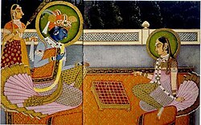
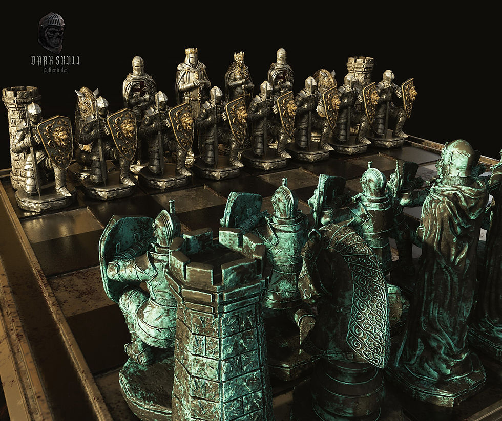

1. Originea: Chaturanga în India Antică

Strămoșul direct al șahului modern a apărut în India în secolul al VI-lea d.Hr. și se numea Chaturanga (care înseamnă „patru divizii ale armatei”: infanterie, cavalerie, elefanți și care de luptă, reprezentate prin piesele de pe tablă). Jocul era o simulare a unei bătălii militare strategice.
2. Răspândirea în Persia și Lumea Arabă

Din India, jocul s-a răspândit în Imperiul Persan, unde a primit numele de Shatranj. Odată cu cucerirea persană de către arabii musulmani, jocul a pătruns în lumea islamică, unde a devenit extrem de popular. Cărturarii arabi au început să analizeze primele probleme de șah și să scrie tratate strategice despre mutări.
3. Trecerea în Europa Medievală

Șahul a ajuns în Europa prin intermediul Spaniei și Italiei în jurul secolului al X-lea. În perioada medievală, regulile jocului au început să se modifice treptat pentru a deveni mai dinamice. Cea mai importantă revoluție a avut loc la sfârșitul secolului al XV-lea, când Dama (Regina) și Nebunul au primit puteri mult mai mari de mișcare, transformând șahul în jocul rapid și agresiv pe care îl știm astăzi.
4. Era Modernă și Campionatele Mondiale

În secolul al XIX-lea, șahul a intrat în era sa modernă prin organizarea primelor turnee internaționale oficiale. Primul campionat mondial oficial de șah a avut loc în 1886, fiind câștigat de Wilhelm Steinitz. Astăzi, șahul este unfenomen global digitalizat, guvernat de FIDE (Federația Internațională de Șah).